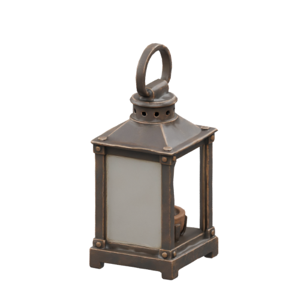

Preparing the village…
Review the walking route and camera. Dialogue, clues and scene actions are placeholders.
Jumps stage the earlier outcomes. Replay walks the full incoming leg. Space pauses while walking; Escape pauses anywhere.
Walk a segment to collect a sample.

+1 LampA light for the road